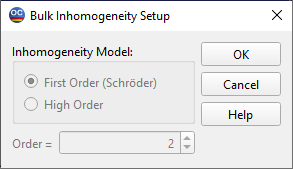

Bulk Inhomogeneity
This option provides a search for bulk inhomogeneity in thin films. It is possible to use various models of the bulk inhomogeneity, with the default setup being the First Order (Schroeder) inhomogeneity model. This model implies that the film refractive index is changing linearly from the film substrate side to the film ambient side.

In the most general case, the refractive index of an inhomogeneous film is a function of two variables: the wavelength λ and the film physical thickness z. The OptiChar bulk inhomogeneity models present the film refractive index ( n(z,λ) in the form:
n(z,λ) = q(z) n(λ)
where n(λ) represents the dispersive dependence of the refractive index, and q(z) describes the film inhomogeneity. The last function is called the inhomogeneity factor.
A detailed discussion related to this presentation can be found in the text “Advanced Thin-Film Optical Coatings: Characterization.”
In the case of high order inhomogeneity models, the inhomogeneity factor is presented by the Chebyshev polynomials. The number in the field Order corresponds to the power of Chebyshev polynomials. This number can be changed in the range from 2 to 12.